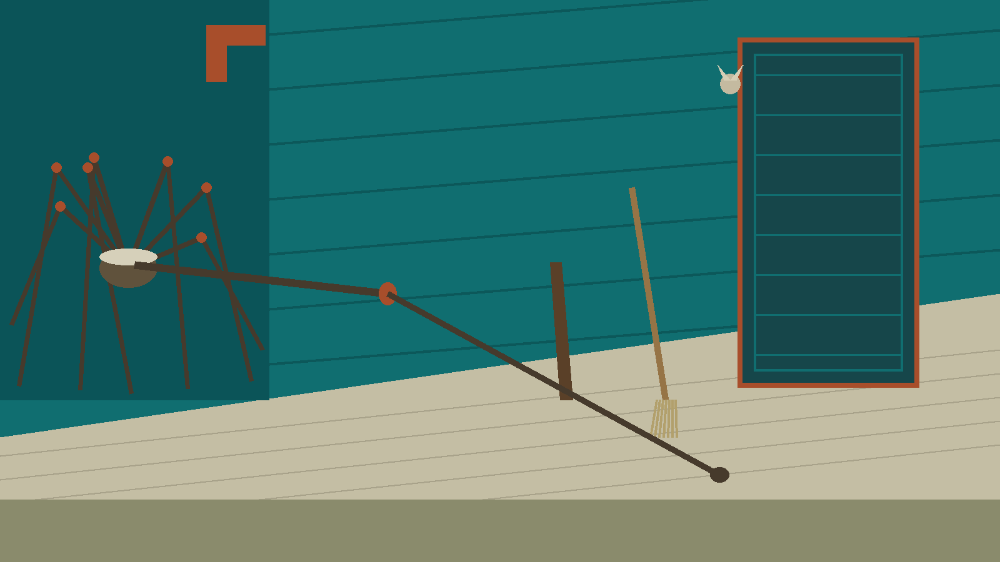
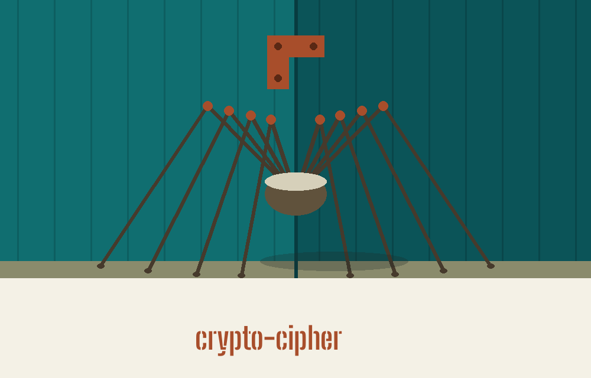
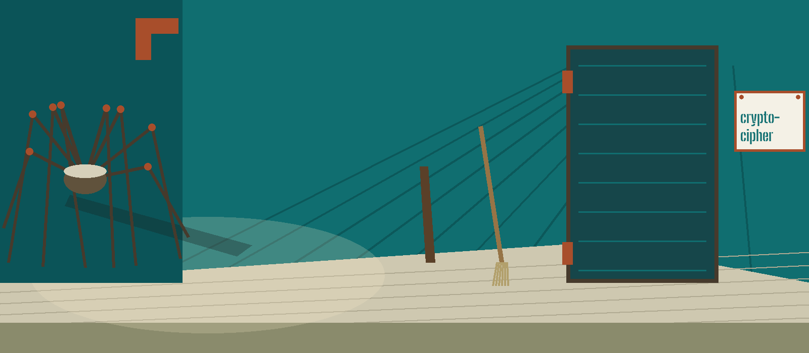

crypto-cipher: The Harvestman's Corner of the Porch
Theme: The Harvestman's Corner of the Porch. Headings in Big Shoulders Stencil Display, reading text in Cabin.


Three Operations Only
A caller generates a key, encrypts a short piece of text, or decrypts a token, each run choosing exactly one of the three as its opening word. The tool works only on text handed to it on the command line, with no reading of files, no writing of files, and no standard input path, a limit this page gives early because it shapes everything a visitor might plan to do with the tool.
A Generated Key Also Enters the Log
Key generation is served by the Fernet construction named in the code. It prints the new key on its own line, and it also writes that same key into the programme log at information level, a behaviour stated here in plain terms and without reproducing any key, since anyone who keeps the log of a generation run keeps a copy of what was generated, and a visitor deserves to know that before running it in a shared place. Extra key or text arguments offered beside a generation request are quietly ignored rather than treated as an error, because the code takes that branch before it checks anything else.
Sealing and Opening
Encryption requires both a key and a text, each supplied as its own named argument, the two being the --key and --text arguments shown in the preserved record below, and it prints the resulting token and nothing else of substance. Decryption requires the same pair, the token standing in the text argument place, and prints the recovered words. The key must be a genuine Fernet key of the kind the generation operation produces, and an ordinary password phrase will not be accepted in its stead.
Both Arguments or the Run Fails
The failures are collected here, where they belong. A missing key or a missing text raises an error that is logged and printed before the run exits 1, and a bad key fails in the same way. A bad token can produce an error line whose message is empty, because the underlying library raises it that way, so a blank looking error is still a failure and still exits 1, while every successful run exits 0 and prints its result.
A Blank Error Still Exits 1
Installation is given in the preserved record below as the README gives it, a single library step drawn from the requirements file, which asks for the cryptography library at the stated floor version, cryptography at 41.0.0 or above. The README offers no clone line and no change of directory, so none is invented here. The three working lines name the opening word as a positional, which the README itself does not call it. The licence is the GNU General Public License v3.0, held in a separate file in its standard form, with no project holder line inside it.
Record preserved from the README
## Crypto-Cipher
Crypto-Cipher encrypts and decrypts short text strings with Fernet
symmetric encryption, and generates Fernet keys. It works on text given
on the command line only; there is no file input or output mode.
### Installation
```
pip install -r requirements.txt
```
### Usage
```
python3 main.py generate-key
python3 main.py encrypt --key <fernet-key> --text "Hello, world!"
python3 main.py decrypt --key <fernet-key> --text <token-from-encrypt>
```
The key must be a real Fernet key, as produced by `generate-key`; an
arbitrary password string is not accepted. A failed run (bad key, bad
token, or a missing `--key` or `--text`) prints an error and exits 1.
### Verified run note
The commands above are taken from the argument parser in `main.py`. A live run in this environment is blocked because the `cryptography` package is not installed here, so even `--help` stops at that import; no run result is claimed for this tool.
### Security Warnings
* Keep your encryption keys confidential.
* Ensure the security of the communication channel while exchanging keys.
### License
Crypto-Cipher is licensed under the GNU General Public License v3.0. See LICENSE.
Facts from the code, stated in the prose
This record names: Fernet, generate-key, encrypt, decrypt, --key, --text, positional, exits 0, exits 1, information level, cryptography, 41.0.0, GNU General Public License v3.0, python3 main.py.